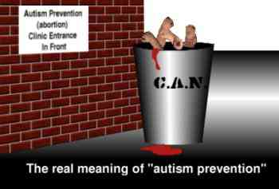

home | project | library | discussion | The Voice | Autistic Liberation Front on Second Life
| The autistics.org website |
|
Autistics.org is now simply an archive The number of persons working on the site dropped to exactly one, and I can't maintain this domain alone.If however someone (autistic adults with a strong advocacy background only) want to maintain it, I'd be more than happy to see it resurrected as a living site System going down for a few days, then coming back as a dynamic site (finally!) (17 Feb 2011) It has taken a while (a lot longer than I had expected) to get to this stage. Too much time and energy has been wasted, frankly, in trying to get a creaky old system to take on a new face, and sometimes needing to do drastic things to plug security leaks. It's time to wipe the server and start fresh. I am unable to give an exact date for the downtime, but it will be in about one week. Users with data on the old system should back things up immediately. Need donations, and our upcoming dynamic site (11 Feb 2010) We badly need donations. Even though we're currently pared down to just running our (multi-site) webserver, we still have almost zero money right now. For more information, including how we spend that money, please see this blog post on the topic. We can also always use volunteers, if any are capable of the work required. The reason that this part of the website has lacked updates for so long, is that we are trying to switch to a dynamic site instead of a static one, so that it is easier for us to update quickly. The (work-in-progress) dynamic site is currently hosted at main.autistics.org if you want to take a look. Unexpected Downtime, but we're nearly all up again (29 July 2008) We obviously had some unplanned downtime recently. We've nearly got everything working again, and expect to get the last of it up and running by the end of this week. It appears that we did not lose any data.
Recent Updates (May, 2008) We've been working hard on this and other sites on the server in the weeks since we were down for maintenance. We're ready to announce the fruit of some of our labor:
Speaking of contact, thanks to the miracle (and low cost) of VOIP, the Autistics.org Project has a telephone number. You can call us at (718) 734-5068. We guarantee that we will respond to your calls with the overloaded, overstressed, and utterly chaotic unprofessionalism you've come to expect from a project run by a group of autistic people ;-) Please Donate to Autistics.org
Also today I have extensively updated the bloated front page. Gone are obsolete items, changed are out of date links, and added are links to the various blogs which have long been the most active areas of autistics.org. (Dec. 13, 2007) I've added a page on our presence in Second Life, including screenshots and information on how people whose computers balk at running the Secondlife client can still attend our Secondlife events.
 |

{kind=link}
| Support autistics.org |
Your contributions keep autistics.org online.
|
|
| At autistics.org: |
-
autistics.org discussion forums
| Hosted at autistics.org: |
The autistics.org domain hosts a number of autism-related websites by individuals and organizations. Views expressed on these pages are not necessarily the views of autistics.org, and vice-versa.
-
A.C.C.E.S.S. (Autistic Continuum Connections, Education, and Support Site)
| Other sites of note: |
| Autism Awareness www.gettingthetruthout.org |
| Autism News: |
Note: the contents below do not reflect the views of autistics.org.
| |
home | project | library | discussion | The Voice | Autistic Liberation Front on Second Life